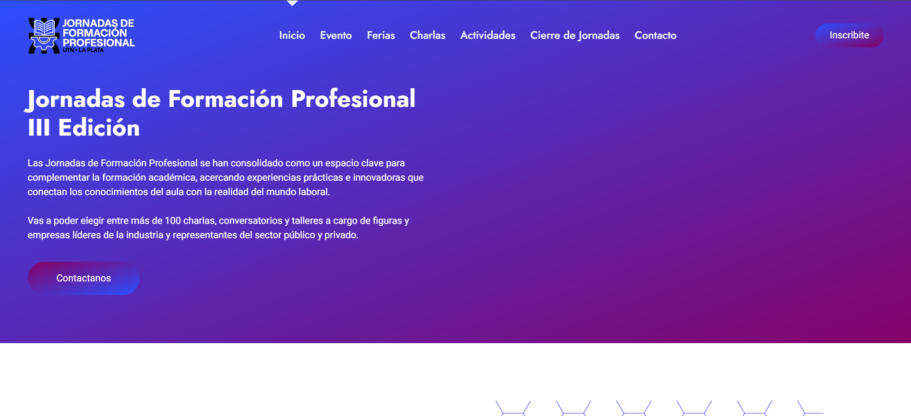
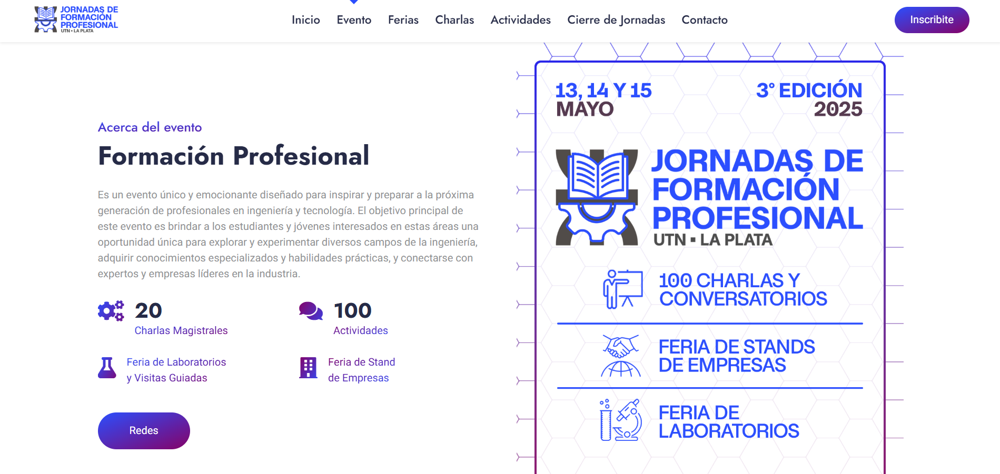
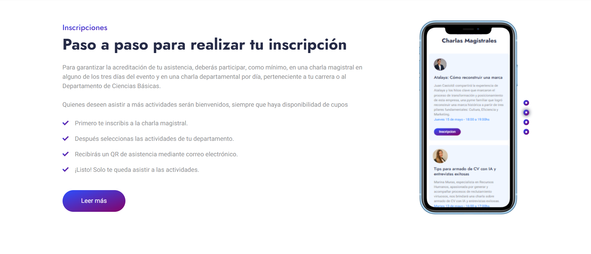
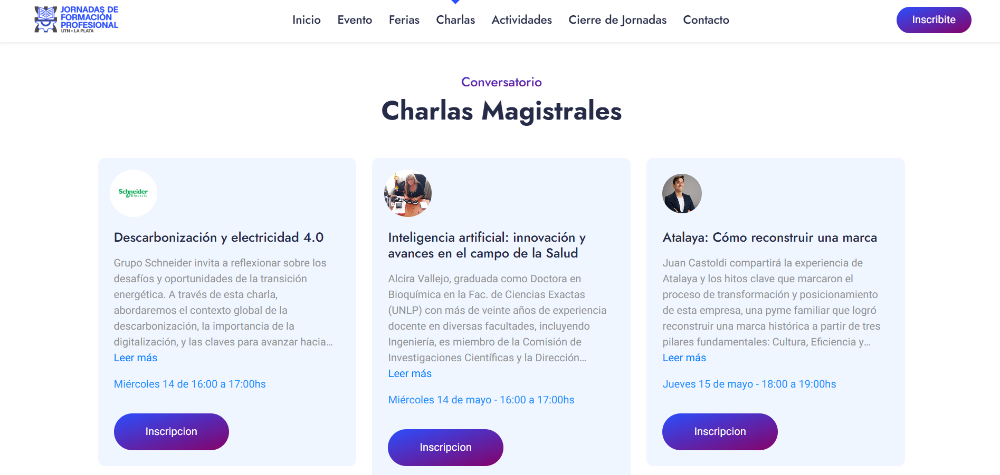
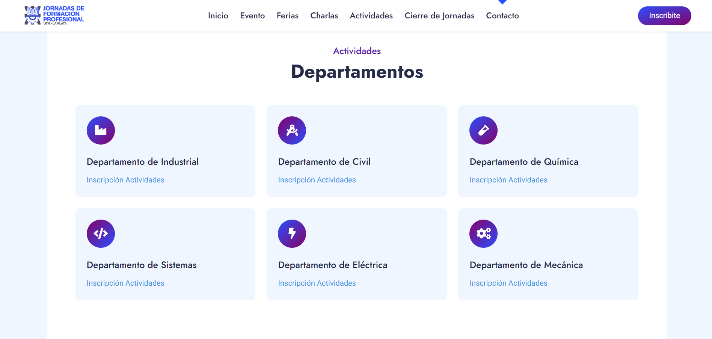

Infraestructura digital para la gestión masiva de asistentes en evento universitario
Nombre del proyecto: Jornadas de Formación Profesional 2025
Descripción: Plataforma y scripts de automatización para gestión de inscripciones, QR y certificados.
Tipo: Proyecto Institucional (UTN FRLP)
Rol: Desarrollador Full-Stack & Automation
Fecha: Abril - Junio 2025
Tecnologías Usadas: Python, Pandas, HTML, CSS
Visitar la página Ver códigoEl proyecto consistió en crear la infraestructura digital de apoyo para las Jornadas de Formación Profesional, un evento masivo institucional. El desafío principal fue automatizar la logística de post-inscripción: procesar, validar, normalizar y transformar las listas de participantes (obtenidas de formularios externos), para luego generar de forma masiva los códigos de acceso (QR) y los certificados de asistencia.
El enfoque se centró en la eficiencia del procesamiento de datos utilizando Python y librerías como Pandas. Desarrollé un workflow para importar y limpiar las listas de inscripción, aplicando reglas de normalización para garantizar la calidad de los datos.
La interfaz frontend se construyó con tecnologías web estándar para servir como portal promocional y facilitar la distribución personalizada de los QR y certificados a miles de asistentes.
Implementé un sistema híbrido que combina:
Scripts optimizados para limpiar y normalizar grandes volúmenes de datos de inscripción con Pandas.
Creación automática de códigos QR únicos para el control de acceso seguro de cada asistente.
Generación y distribución masiva de certificados de asistencia personalizados en formato PDF.
Interfaz moderna y responsive para la difusión de cronogramas, disertantes y noticias del evento.
Reducción drástica del trabajo manual mediante scripts de Python.
Gestión fluida de miles de inscritos y participantes.
Procesamiento preciso y validación de información institucional.
Generación automática de PDFs y QRs personalizados.




